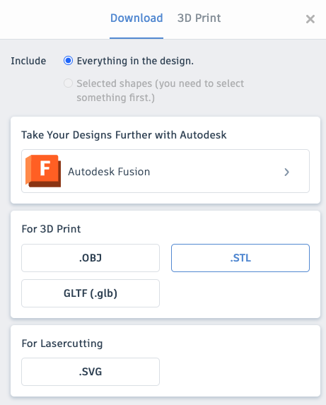
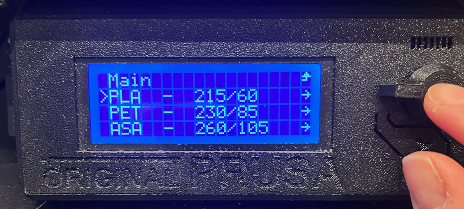

3D Printing for "Dummies"
How to get started with our 3D printer

Overview of the 3D printing workflow

Finding a 3D model on the internet
Find a model at Thingiverse.com
Download model to your laptop.

Export as .STL fortmat

PruzaSlicer software
Download and install PrusaSlicer
(windows/mac/linux)
Open application
Import your model in .STL format
PruzaSlicer local config
Set the desired print quality

Print settings: granularity of each print level
Fillament: most likely you use "PLA"
Printer: Set "Orginal Prusa i3 MK3S & MK3S+"
Infill: Density ( of fillament) inside of model
Model size and print quality affect print time
Size Large models take time to print.
Size and quality affect print time
Quality Thicker levels -> reduces time
Size and quality affect print time
Scale down -> reduces time
Size and quality affect print time
Treefrog from 19 hours to 15 minutes
Right size and quality -> Ready to slice
Click "Export G-code"
and copy .gcode file to the SD card
Preparing the 3D printer
Steps Preheat
Check temperature

Preheat if necessary

Choose type of fillament - PLA

Wait for the temperature

Load fillament and print
Steps
Cut the end of the fillament

Place the fillament on top of table.

Push fillament down into head node.
Select "Autoload fillament"
Choose type of fillament - PLA
If fillament is NOT appering, click no

When fillament appears, click yes.

Print from SD card

At the 3D printer - good practices
Make sure the print board is clean
, use cleaning wipes if not
Don´t put your fingers on the print board
fingerprints will prevent the fillament to stick properly
Use the "metallskrape" to remove the finished 3D print from the board
Remove the fillament and put it back to the plastic bag When finished, it needs protection from humidity
Turn of the 3D printer power, remove excess fillament and garbage from the printer area.
IF stuck.... - ask Hallgeir or Jørn

Thank you for your attention
Marita Midthaug

Lead analyst IT
Equinor